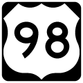
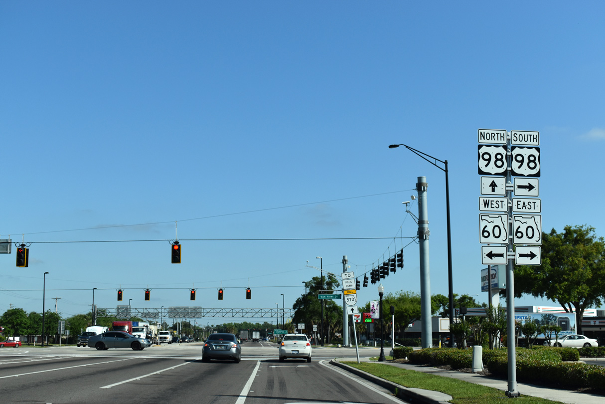

State and County
100-2=
The first part of this road journey starts with United States Highways: This one is called U.S. Route 98, a lengthy trail of ground with a complicated edge,
there's always a city when you don't want one. It first began in Florida but expanded in both directions.
By now, you could take it far west outside the state or far east to West Palm Beach.

Standard emblem accompanied by intersection in Bartow, Florida.
NEXT